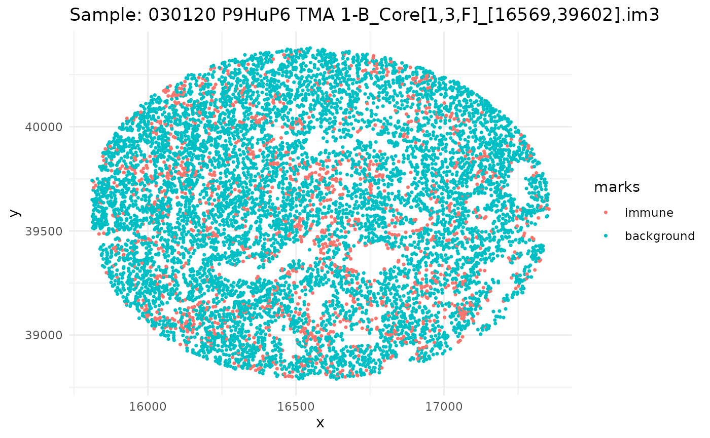
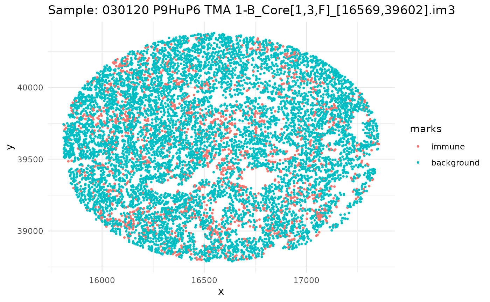

Introduction to kamp
my-vignette.RmdIntroduction
Hello and welcome to the kamp package! This package is
designed to calculate the expectation and variance of KAMP (K adjustment
by Analytical Moments of the Permutation distribution) for point
patterns with marks. The package is partially built on the
spatstat package, which is a powerful tool for analyzing
spatial data in R. The kamp package provides functions to
simulate point patterns, calculate the KAMP CSR, and visualize the
results. The package is designed to be user-friendly and easy to use,
with a focus on providing clear and concise output. The package is still
in development, and we welcome any feedback or suggestions for
improvement. If you have any questions or issues, please feel free to
reach out to us.
Setup
library(kamp)
#library(devtools)
library(tidyverse)
#> ── Attaching core tidyverse packages ──────────────────────── tidyverse 2.0.0 ──
#> ✔ dplyr 1.1.4 ✔ readr 2.1.5
#> ✔ forcats 1.0.0 ✔ stringr 1.5.1
#> ✔ ggplot2 3.5.2 ✔ tibble 3.3.0
#> ✔ lubridate 1.9.4 ✔ tidyr 1.3.1
#> ✔ purrr 1.1.0
#> ── Conflicts ────────────────────────────────────────── tidyverse_conflicts() ──
#> ✖ dplyr::filter() masks stats::filter()
#> ✖ dplyr::lag() masks stats::lag()
#> ℹ Use the conflicted package (<http://conflicted.r-lib.org/>) to force all conflicts to become errors
library(spatstat.random)
#> Loading required package: spatstat.data
#> Loading required package: spatstat.univar
#> spatstat.univar 3.1-4
#> Loading required package: spatstat.geom
#> spatstat.geom 3.5-0
#> spatstat.random 3.4-1
#devtools::load_all()
set.seed(50)Simulating Data
The sim_pp_data function can be used to simulate
univariate point patterns, while the sim_pp_data_biv
function can be used to simulate bivariate point patterns.
The sim_pp_data function takes the following
arguments:
lambda_n: The number of points to simulate.abundance: The abundance of the point pattern.markvar1: The name of the first cell type. Defaults to “immune”.markvar2: The name of the second cell type. Defaults to “background”.distribution: The distribution of the point pattern. This can be either “hom” for homogeneous or “inhom” for inhomogeneous.clust: A logical value indicating whether to cluster the points or not.
The sim_pp_data_biv function takes the same arguments as
sim_pp_data, but also includes an additional argument for
the third cell type.
-
markvar3: The name of the third cell type. Defaults to “background”.
The sim_pp_data and sim_pp_data_biv
functions return a ppp object, which is a class in the
spatstat package that represents a point pattern. The
ppp object contains the x and y coordinates of the points,
as well as the marks associated with each point.
Univariate
univ_data <- sim_pp_data(lambda_n = 200,
abundance = 0.3,
markvar1 = "immune",
markvar2 = "background",
distribution = "hom",
clust = FALSE)We can plot this using ggplot:
as_tibble(univ_data) %>%
ggplot(aes(x,y, color = marks)) +
geom_point()Bivariate
biv_data <- sim_pp_data_biv(lambda_n = 200,
abundance = 0.3,
markvar1 = "immune1",
markvar2 = "immune2",
markvar3 = "background",
distribution = "inhom",
clust = TRUE)
#> Computing probability for Cell 1
#> Computing probability for Cell 2
#> Computing hole probabilityWe can plot this using ggplot:
as_tibble(biv_data) %>%
ggplot(aes(x,y, color = marks)) +
geom_point()
Ovarian Dataset
The ovarian_df dataset is a small dataframe that
contains a snapshot of 5 images of ovarian cancer cells from the
HumanOvarianCancerVP() dataset in the
VectraPolarisData package. Each image is represented by a
unique sample ID, and within each image, there are multiple cells with
their respective x and y coordinates. The dataset includes an
immune column that indicates whether the cell is an immune
cell or a background cell. There is also a phenotype column
that indicates the type of immune cell, such as “helper t cells”,
“cytotoxic t cells”, “b cells”, or “macrophages”. The x and
y columns represent the coordinates of the cells in the
image.
data(ovarian_df)
head(ovarian_df)
#> cell_id sample_id x y
#> 1 1 030120 P9HuP6 TMA 1-B_Core[1,1,H]_[20633,35348].im3 20592.9 34524.4
#> 2 2 030120 P9HuP6 TMA 1-B_Core[1,1,H]_[20633,35348].im3 20859.3 34524.4
#> 3 3 030120 P9HuP6 TMA 1-B_Core[1,1,H]_[20633,35348].im3 20591.4 34530.4
#> 4 4 030120 P9HuP6 TMA 1-B_Core[1,1,H]_[20633,35348].im3 20744.7 34528.9
#> 5 5 030120 P9HuP6 TMA 1-B_Core[1,1,H]_[20633,35348].im3 20419.8 34540.8
#> 6 6 030120 P9HuP6 TMA 1-B_Core[1,1,H]_[20633,35348].im3 20741.7 34542.3
#> immune phenotype
#> 1 background other
#> 2 background other
#> 3 background tumor
#> 4 background tumor
#> 5 background other
#> 6 background tumorSince we have a datafame of multiple images, let’s go through, subset our dataframe by image, and plot it.
ids <- unique(ovarian_df$sample_id)
marksvar <- "immune"
for (id in ids) {
df_sub <- ovarian_df %>% filter(sample_id == id)
w <- convexhull.xy(df_sub$x, df_sub$y)
pp_obj <- ppp(df_sub$x, df_sub$y, window = w, marks = df_sub[[marksvar]])
p <- ggplot(as_tibble(pp_obj), aes(x, y, color = marks)) +
geom_point(size = 0.6) +
labs(title = paste("Sample:", id)) +
theme_minimal()
print(p)
}

 

Univariate
# We can use the kamp function to calculate the KAMP CSR for the univariate data
# Lets first subset to one id
ids <- unique(ovarian_df$sample_id)
marksvar <- "immune"
univ_data <- ovarian_df %>% filter(sample_id == ids[1])
w <- convexhull.xy(univ_data$x, univ_data$y)
pp_univ_data <- ppp(univ_data$x, univ_data$y, window = w, marks = univ_data[[marksvar]])
univ_kamp <- kamp(pp_univ_data,
rvals = c(0, 0.1, 0.2),
univariate = TRUE,
marksvar1 = "immune",
marksvar2 = "background")
univ_kamp
#> # A tibble: 3 × 5
#> r k theo_csr kamp_csr kamp
#> <dbl> <dbl> <dbl> <dbl> <dbl>
#> 1 0 0 0 0 0
#> 2 0.1 0 0.0314 0 0
#> 3 0.2 0 0.126 0 0